▲ 북미 공개 때의 아우디 누볼라리 프로토타입 — 499대 한정 양산이 확정된 아우디 최초의 하이브리드 슈퍼카
"저 차, 한국에도 들어오나요?" 미국 시장에서 막 나온 신차를 볼 때 한국 독자가 가장 먼저 묻는 질문이다. 카앤드라이버가 2027년형 뷰익 엔비전, 2027년형 쉐보레 트래버스, 2028년형 아우디 누볼라리를 차례로 정리한 가운데, 세 차는 성격이 완전히 다르다. 하나는 중국에서 만들어 미국으로 들여오던 컴팩트 SUV, 하나는 7인승 패밀리 SUV, 하나는 499대만 만드는 슈퍼카다. 이 글은 세 차를 제조사 프레스룸 자료와 카앤드라이버 데이터로 확인한 뒤, 한국 소비자 관점에서 국내 판매 여부와 경쟁 모델이라는 하나의 질문으로 엮었다.
1. 세 차를 한눈에 — 한국 판매 여부부터
국내 판매 여부 기준으로 보면 세 차의 처지는 모두 다르다. 엔비전은 한국에서 팔리지 않고, 누볼라리는 국내 판매 계획이 발표되지 않았으며, 트래버스는 한국GM이 과거 세대를 판매했지만 신세대 도입 일정이 확인되지 않는다. 아래 표는 세 차의 핵심 정보를 한 번에 정리한 것이다.
| 항목 | 2027 뷰익 엔비전 | 2028 아우디 누볼라리 | 2027 쉐보레 트래버스 |
|---|---|---|---|
| 성격 | 5인승 컴팩트 SUV | 2인승 미드십 슈퍼카 | 7·8인승 3열 SUV |
| 양산 여부 | 시판 중인 양산 모델 | 양산 직전 프로토타입 공개, 499대 한정 생산 | 시판 중인 양산 모델 |
| 파워트레인 | 2.0L 터보 4기통 228hp, 9단 AT, AWD | 4.0L 트윈터보 V8 + 전기모터 3개, 1,001PS | 2.5L 터보 4기통 328hp, 8단 AT, FWD·AWD |
| 미국 가격 | 43,295~52,695달러 | 약 70만 달러(비공식 추정) | 43,095~58,095달러(카앤드라이버) · AWD 포함 시 최대 60,095달러(GM 오소리티) |
| 국내 판매 | 없음(뷰익은 엘렉트라 E7로 진출) | 발표 없음 | 신세대 도입 일정 미확인 |
| 국내 비교 대상 | 제네시스 GV70 | 람보르기니 테메라리오·페라리 296 GTB | 현대 팰리세이드 |
2. 2027 뷰익 엔비전 — 5인승 컴팩트 SUV, 한국에는 없고 뷰익만 먼저 왔다
2027년형 엔비전의 유일한 눈에 띄는 변경은 미드나이트 오팔 외장색이 빠진 것이다. 카앤드라이버에 따르면 엔비전은 2021년 2세대로 데뷔한 뒤 2024년 부분변경을 거쳤고, 2027년형은 그 연장선에 있다. 파워트레인은 하나뿐이다. 228마력 2.0리터 터보 4기통에 9단 자동변속기, 전 트림 AWD다. 가격은 카앤드라이버 집계 43,295~52,695달러다.
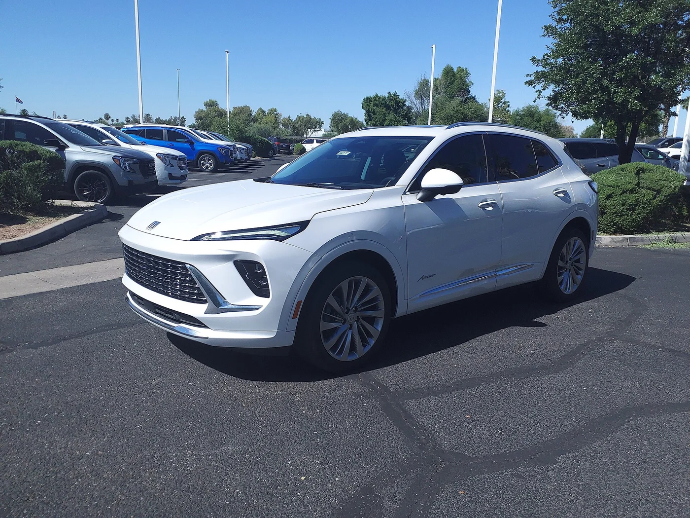
▲ 뷰익 엔비전 아베니르 — 2024년 부분변경 이후 디자인(2024년형 촬영, 카앤드라이버는 2027년형에 큰 변화가 없다고 밝혔다) ⓒ Wikimedia Commons / HJUdall (CC0)
카앤드라이버의 평가는 냉정하다. 엔비전은 소음과 승차감, 실내 공간, 큰 화면은 칭찬받지만 "아베니르 트림이 겨냥하는 제네시스 GV70·메르세데스 GLC만큼의 고급감이 없다"는 지적이다. 가장 큰 약점은 파워트레인이다. 228마력 터보는 2021년에는 경쟁력이 있었지만, 현행 GV70 기본 터보 4기통은 300마력이다. 카앤드라이버 시험에서 엔비전의 0→60mph는 7.3초로, 아우디 Q5(5.8초), 링컨 코세어(6.1초), GLC300(5.7초), GV70 기본형(5.6초)보다 뒤처졌다(엔비전 수치는 2021년형 시험 기준).
| 항목 | 내용 |
|---|---|
| 트림 | 프리퍼드(Preferred), 스포츠 투어링, 아베니르 — 전 트림 AWD |
| 연비(EPA) | 도심 22mpg·고속 28mpg·복합 25mpg |
| 디스플레이 | 30인치 와이드 화면에 계기판·인포테인먼트 통합, 무선 CarPlay·Android Auto, 헤드업 디스플레이 기본 |
| 적재 공간 | 캐리온 가방 9개(2열 사용 시), 21개(2열 폴딩 시) |
| 견인·보증 | 견인 1,500파운드, 3년/3만 6천 마일 보증, 파워트레인 5년/6만 마일 |
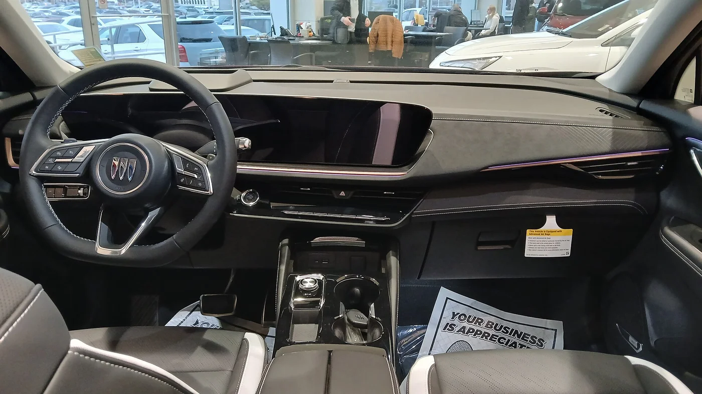
▲ 2025년형 엔비전 실내 — 한 장으로 이어진 와이드 화면이 이 차의 얼굴이다 ⓒ Wikimedia Commons / Deathpallie325 (CC BY 4.0)
📍 엔비전은 '중국산'이었고, 다음 세대는 미국에서 만든다
GM은 올해 1월 22일 현재 중국에서 생산하는 엔비전의 생산지를 2028년부터 미국 캔자스시티 인근 공장으로 옮기겠다고 밝혔다(BNN 블룸버그 보도). 2018년부터 중국산 수입 차량에 25% 관세가 붙어 왔고, 엔비전은 지난해 미국에서 약 4만 2천 대(41,924대, 전년 대비 11.4% 감소)가 팔렸다(GM 오소리티 집계 보도). 즉 지금 팔리는 엔비전은 중국 생산이고, 미국 생산은 2028년부터다.
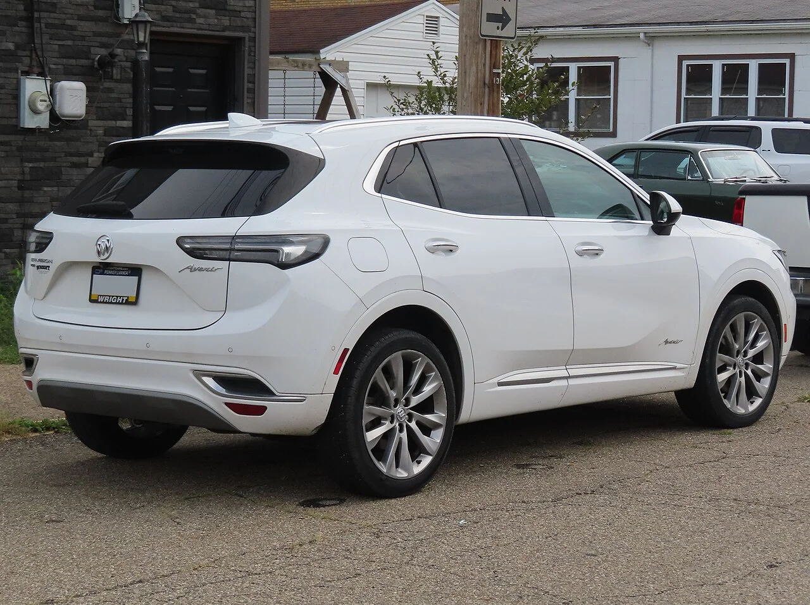
▲ 뷰익 엔비전 아베니르 후면 — 가로로 이어진 테일램프와 루프 스포일러가 보인다(2022년형 촬영, 2024년 부분변경 이전 디자인이라 현행 2027년형과 세부가 다를 수 있다) ⓒ Wikimedia Commons / MercurySable99 (CC BY-SA 4.0)
한국 소비자가 알아둘 점은 두 가지다. 하나, 엔비전은 한국 시판 모델이 아니다. 둘, 뷰익 브랜드는 올 9월 30일 서울 동대문디자인플라자에서 한국 진출을 공식 발표했고, 첫 모델은 엔비전이 아니라 플러그인 하이브리드 중형 SUV '엘렉트라 E7'이다. 한국GM은 4개 트림에 4,300만~5,400만 원대 가격으로 11월부터 판매에 들어간다고 밝혔다(스마트투데이). 한국이 북미 다음으로 뷰익의 두 번째 해외 진출 시장이 되는 것이다. 엔비전 도입 계획은 확인되지 않았다.
3. 2028 아우디 누볼라리 — 콘셉트가 아니다, 그러나 아직 '프로토타입'이다
누볼라리는 콘셉트카가 아니라 양산이 확정된 한정 슈퍼카다. 다만 지금까지 공개된 차는 '양산 직전 프로토타입'이다. 아우디는 6월 4일 보도자료에서 이 차가 "브랜드 역사상 가장 빠르고 가장 강력한 양산차"이며 499대만 만들고 인도는 2027년 상반기에 시작한다고 밝혔다. 보도자료 사진 설명에는 공개된 차량이 "near-production prototype(양산 직전 프로토타입)"이라고 명시돼 있다. 8월 25일에는 미국 몬터레이 카 위크에서 북미 데뷔와 도로 시연까지 마쳤다.
▲ 북미 공개 때의 아우디 누볼라리 프로토타입 전면부 — 양산 직전 프로토타입이라는 점이 보도자료에 명시돼 있다 ⓒ Audi AG
| 항목 | 내용 | 근거 |
|---|---|---|
| 상태 | 양산 직전 프로토타입 공개, 499대 한정 생산 | 아우디 보도자료(6월 4일) |
| 시스템 출력 | 1,001PS(736kW) — 미국 표기 약 987hp | 아우디·카앤드라이버 |
| 구성 | 4.0L 바이터보 V8(800PS·730Nm, 약 10,000rpm까지 회전) + 액셜 플럭스 전기모터 3개(각 110kW, 앞차축 2개), 8단 듀얼클러치, AWD. 배터리 총용량 7.3kWh | 아우디·카앤드라이버 |
| 성능 | 0→100km/h 2.6초, 0→200km/h 6.8초, 최고속도 350km/h 이상(배터리 온도 28도 이상·충전율 80% 이상 조건이라는 보도) | 아우디·electrek |
| 인도 | 2027년 상반기 시작. 미국 약 200대는 2028년부터라는 보도가 있음(단일 출처) | 아우디·하입비스트 |
| 가격 | 공식 발표 없음. 약 60만 유로(약 70만 달러)로 추정, 국내 언론은 약 9억 6,600만 원으로 환산 | 언론 추정 |
| 연료 소비(잠정) | 복합 11.3L/100km, 전력 7.8kWh/100km, CO₂ 270g/km | 아우디(잠정치) |
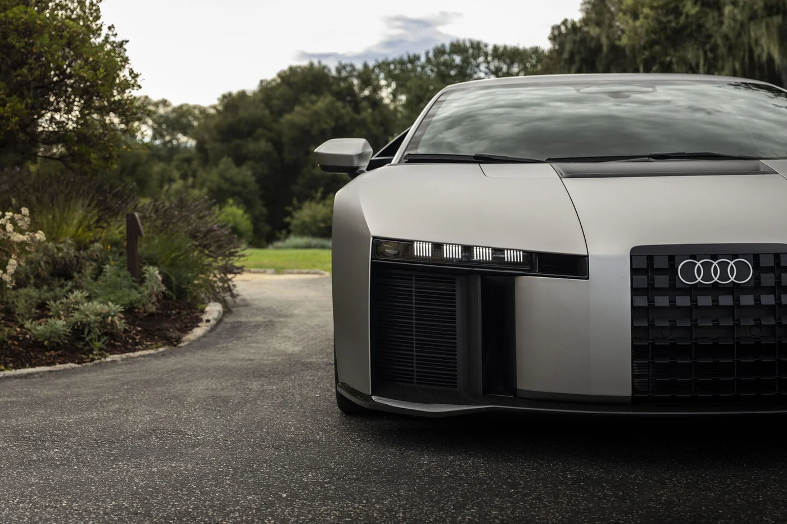
▲ 누볼라리 프로토타입 전면 디테일 — 사각 그릴 안의 포링 엠블럼과 낮게 깔린 노즈가 눈에 띈다(양산 직전 프로토타입) ⓒ Audi AG
카앤드라이버는 누볼라리가 람보르기니 테메라리오의 4.0리터 트윈터보 V8 하이브리드를 공유하되 출력은 테메라리오보다 80마력 높다고 설명한다(1,001PS를 마력으로 환산하면 약 987hp — 1PS≈0.9863hp). 포뮬러 1에서 영감받은 기술로는 다운포스와 공기저항을 상황에 맞춰 바꾸는 능동 공력 장치, 센서로 각 바퀴 토크를 미리 조절하는 새 콰트로 프레딕티브 라이드, 카본 외피의 아우디 스페이스 프레임이 꼽힌다. 카앤드라이버는 프로토타입을 시승하고 운전 모드에 따라 다양한 성격을 보이는 적극적이고 몰입감 있는 차라고 평가했다.
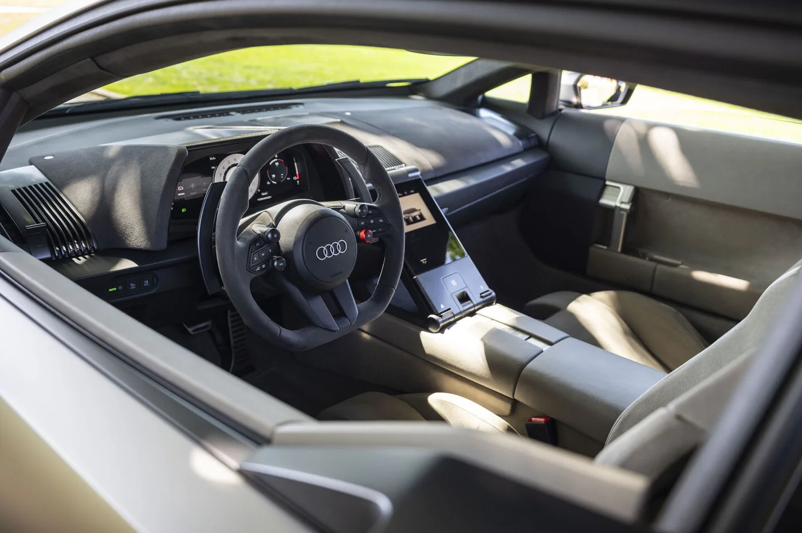
▲ 누볼라리 실내 — 푸시 버튼식 셀렉터와 소수의 물리 버튼으로 꾸민 미니멀한 운전석 ⓒ Audi AG
실내는 장식을 줄인 미니멀한 구성이다. 카앤드라이버에 따르면 기어는 푸시 버튼으로 고르고, 주행은 스티어링 휠 패들을 눌러 시작한다. 트렁크는 없고 시트 뒤 선반에 짐을 두는 방식이며, 아우디는 이 선반에 맞춘 전용 수하물을 내놓을 계획이다.
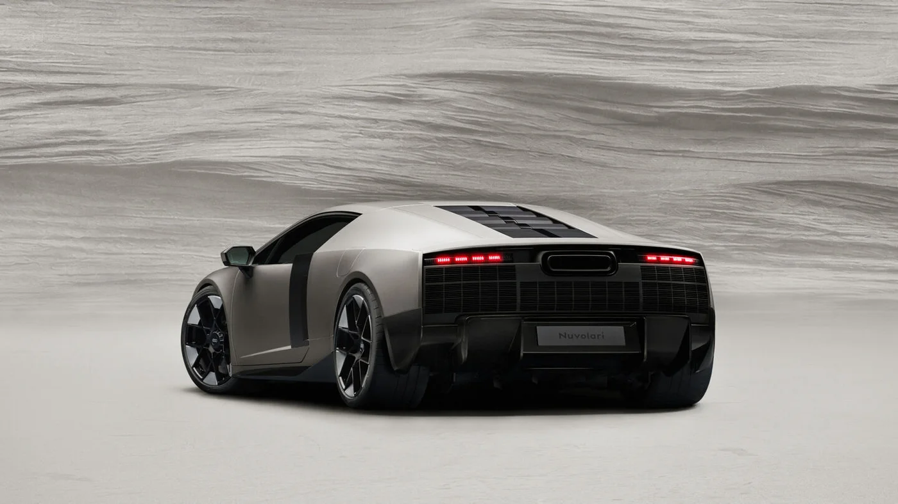
▲ 아우디 누볼라리 후면부 — 아우디 R8 단종(2023년형) 이후 슈퍼카가 돌아온다 ⓒ Audi AG
4. 2027 쉐보레 트래버스 — 고급 트림이 달라졌고 기본기는 그대로다
2027년형 트래버스의 핵심은 최상위 '하이컨트리' 트림의 개선과 카메라 기능이다. GM은 8월 25일 보도자료에서 하이컨트리를 "더 현대적이고 운동적이며 동시대적으로" 바꾸고 이를 트래버스에 먼저 적용한다고 밝혔다. 이후 차세대 2027 실버라도에도 같은 처리를 쓴다. 외관은 새 하이컨트리 배지, 그릴·헤드램프 장식의 새로운 트리탄 새틴 마감, 22인치 고광택 블랙·머시닝 페이스 알루미늄 휠이다. 실내는 제트 블랙 시트에 내추럴 탠 포인트, 내추럴 탠 안전벨트, 엠보싱 처리한 앞좌석 헤드레스트, 실제 우드 장식을 쓴다.
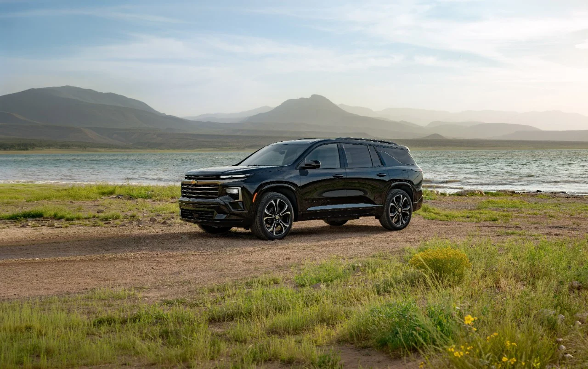
▲ 2027 쉐보레 트래버스 하이컨트리 — 모자이크 블랙 메탈릭, 새 트리탄 새틴 그릴과 22인치 휠이 적용됐다 ⓒ General Motors 보도자료
기술 면에서는 실내 카메라가 기본 또는 선택 사양으로 들어온다. 실내 카메라는 모든 2027 트래버스에서 선택 가능하고 하이컨트리와 RS에서는 기본이다. 2열·3열을 실시간으로 보여주는 '캐빈 글랜스', 차량 카메라 영상을 저장하는 '서라운드 비전 레코더', 도난 경보 때 자동으로 녹화하는 '시큐리티 레코딩'이 함께 제공된다. GM에 따르면 트래버스 판매량은 올해 2분기 20% 늘었고, 상반기 판매는 이 차 이름 역사상 최고였다. 하이컨트리는 9월부터 미시간주 랜싱 델타 타운십 공장에서 생산된다.
| 트림 | 시작가(미국, FWD 기준·운송료 1,995달러 포함, GM 오소리티) | 전년 대비·특징 |
|---|---|---|
| LT | 42,795달러 | 전년과 동일. FWD |
| Z71 | 51,095달러 | +200달러, AWD 전용 오프로드 지향 |
| RS | 57,795달러 | +400달러, 슈퍼 크루즈 기본(카앤드라이버) |
| 하이컨트리 | 58,095달러 | +1,000달러, 개선된 외관·실내, 슈퍼 크루즈 기본 |
가격은 출처에 따라 약간 다르다. 카앤드라이버는 2027년형 트래버스의 미국 가격 범위를 43,095~58,095달러로 제시해 최저가에서 300달러 차이가 난다. 하이컨트리 가격은 두 곳이 같다. 슈퍼 크루즈는 카앤드라이버가 RS·하이컨트리 기본, 나머지는 선택 사양이라고 밝혔고, GM 보도자료는 "선택 가능"이라고만 적었다. GM 오소리티 보도는 견인 패키지가 이제 전 트림 기본이라고도 전한다. GM 오소리티가 6월 공개한 2027년형 가격표에 따르면 표의 금액은 필수 운송료 1,995달러를 포함한 값이며, AWD를 고르면 LT 44,795달러, RS 59,795달러, 하이컨트리 60,095달러로 올라간다(Z71은 AWD 전용). 그래서 카앤드라이버의 43,095~58,095달러 범위와 상단이 어긋나는데, 집계 기준(운송료 포함 여부·AWD 포함 여부)의 차이로 보인다(추정). 한국 독자는 '최저가 약 4만 3천 달러, AWD 고급 트림은 6만 달러 안팎'으로 이해하면 된다.
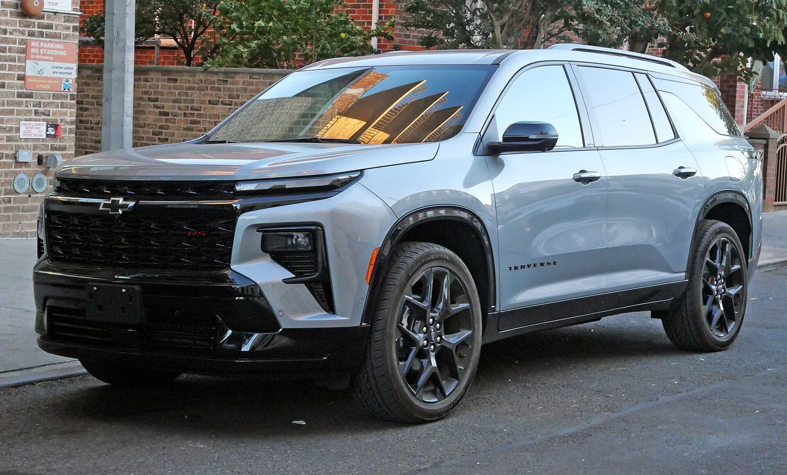
▲ 트래버스 RS — 어두운 그릴과 휠로 스포티한 분위기를 낸 트림(2024년형 촬영, 같은 세대) ⓒ Wikimedia Commons / Kevauto (CC BY-SA 4.0)
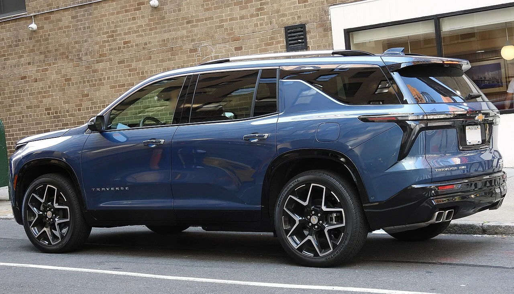
▲ 트래버스 하이컨트리 후면 — 신세대 트래버스의 세로형 테일램프와 듀얼 배기 팁이 보인다(2025년형 촬영, 같은 세대) ⓒ Wikimedia Commons / Mr.choppers (CC BY-SA 4.0)
📍 트래버스, 숫자로 정리하면 (카앤드라이버·GM)
· 파워트레인: 2.5L 터보 4기통 328hp·326lb-ft, 8단 자동, FWD 기본·AWD 선택
· 0→60mph 7.3초(RS AWD 시험) — 기아 텔루라이드 7.4초와 비슷
· 견인 최대 5,000파운드, 전 열 접으면 최대 약 97~98입방피트, 3열 사용 시 23입방피트
· 연비: FWD 20/26/22mpg, AWD 20/24/21mpg(도심/고속/복합)
· 인포테인먼트: 17.7인치 터치스크린(기본), 11인치 디지털 계기판, USB 포트 6개
· 3열은 "성인 둘이 무난히 앉을 수 있는 수준"(카앤드라이버)
5. 한국 소비자 눈으로 보면 — 국내 판매 여부와 경쟁 모델
세 차 모두 국내에서 '지금 살 수 있는 신차'는 아니다. 엔비전은 한국 시판 모델이 아니고, 누볼라리는 한정 생산 슈퍼카로 국내 판매 계획이 발표되지 않았으며, 트래버스는 신세대 도입 일정이 확인되지 않는다. 한국GM은 2022년 1월 부분변경 트래버스(3.6 V6, 314마력)를 5,470만 원부터 사전계약했고 하이컨트리는 6,430만 원이었다(모터그래프). 한국GM은 올해 1월 27일 GMC 브랜드 데이에서 같은 플랫폼의 형제차인 GMC 아카디아를 공개했고, 2월 국내 출시된 아카디아(드날리 얼티밋 단일 트림)는 8,990만 원으로 미국 판매가(6만 5,095달러)보다 낮게 책정됐다고 보도됐다. 즉 GM의 '트래버스급 3열 SUV'는 국내에서 쉐보레가 아닌 GMC 아카디아로 먼저 판매되고 있는 셈이다. 신세대 트래버스의 국내 출시는 공식 발표가 없고, 도로 주행 포착과 인증 소식을 근거로 한 업계 추정만 있다.
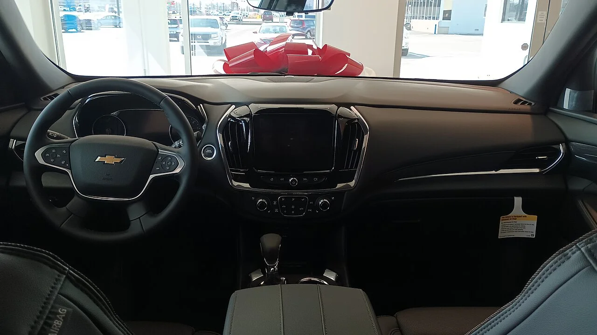
▲ 한국에서 판매된 이전 세대(2018~2023년형) 트래버스 실내 — 2027년형의 17.7인치 화면·11인치 디지털 계기판과는 구성이 다르다(미국 판매 차량 촬영) ⓒ Wikimedia Commons / deathpallie325 (CC BY-SA 4.0)
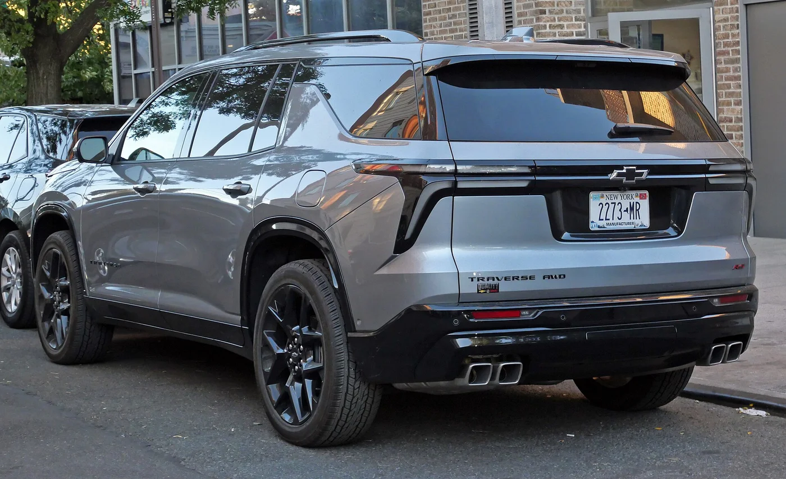
▲ 트래버스 RS 후면부 — 최대 약 98입방피트의 적재 공간을 가진 3열 SUV ⓒ Wikimedia Commons / Kevauto (CC BY-SA 4.0)
| 미국 신차 | 국내 대체재(카앤드라이버 비교 대상 기준) | 국내 소비자가 확인할 점 |
|---|---|---|
| 뷰익 엔비전 | 제네시스 GV70(기본 터보 300마력) | 엔비전은 미판매. 뷰익 첫 모델은 엘렉트라 E7(4,300만~5,400만 원대, 11월 판매) |
| 아우디 누볼라리 | 람보르기니 테메라리오, 페라리 296 GTB | 499대 한정 — 국내 배정·판매 여부는 아우디코리아 발표 전까지 알 수 없음 |
| 쉐보레 트래버스 | 현대 팰리세이드(카앤드라이버는 팰리세이드 하이브리드·기아 텔루라이드·마즈다 CX-90도 대안으로 제시) | 신세대 국내 출시 미확인, 한국GM 공식 발표 필요 |
✅ 미국 신차 소식을 볼 때 한국 독자가 확인할 것
· 미국 가격(달러)은 국내 가격이 아니다 — 관세·환율·인증 절차가 더해진다
· 'near-production prototype'처럼 공개 단계 표현을 구분해 읽자 — 공개 ≠ 양산 ≠ 국내 출시
· 출력 단위가 PS인지 hp인지 확인 — 누볼라리 1,001PS는 미국 기준 약 987hp
· 국내 판매는 제조사 한국 법인의 공식 발표로만 확정된다
6. 요약
2027 뷰익 엔비전은 228마력 2.0 터보 AWD의 컴팩트 SUV로 올해 변경은 색상 하나 삭제뿐이며, 한국에는 판매되지 않는다. 뷰익은 9월 30일 한국에 진출했지만 첫 모델은 엘렉트라 E7이다. 2028 아우디 누볼라리는 콘셉트가 아니라 499대 한정 양산이 확정된 슈퍼카이고, 지금 공개된 차는 양산 직전 프로토타입이다. 1,001PS 하이브리드, 인도는 2027년 상반기부터지만 국내 판매는 발표되지 않았다.
2027 쉐보레 트래버스는 328마력 2.5 터보 3열 SUV로, 개선된 하이컨트리와 카메라 기능이 새로 붙었다. 미국 가격은 4만 3천 달러대에서 AWD 고급 트림 6만 달러 안팎(운송료 포함 기준)이고, 한국GM의 신세대 도입 일정은 확인되지 않았다. 세 차 모두 한국에서 바로 살 수 있는 차는 아니므로, 국내 소비자에게는 제네시스 GV70, 현대 팰리세이드 같은 국산 대안이 현실적인 비교 대상이다.